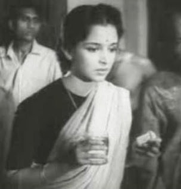

फिल्म समीक्षा: अनुराधा 1960
इस फिल्म के गीत अफलातून जी ने आगाज़ पर चढ़ाये हैं सो यहां गाने ना लगाकर उस पोस्ट का ही लिंक दे रहा हूं
लालित्यपूर्ण लीला नायडू की स्मृति में अनुराधा

THE CONVERSATION, PRESERVED
Read-only. Names and wording belong to the original contributors.